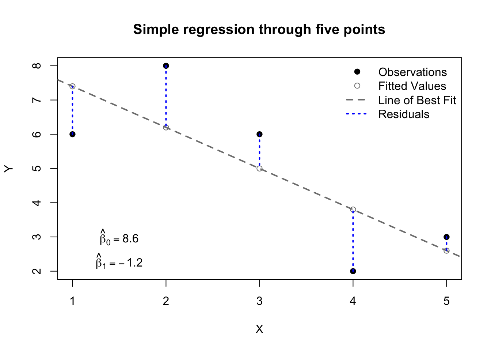

The previous sections have focused on univariate inference, i.e. on determining the distribution of a single column of numbers. Let’s advance to a more complicated topic: modeling one column of numbers (the response variable, sometimes called \(Y\)) as a function of one or more other columns (the predictors, sometimes called the \(X\)s). Many different models share this generic description, but ordinary least square (OLS) regression remains the most popular method used by novice and expert practitioners alike. OLS regression brings advantages and disadvantages, and many extensions which broaden its applicability, but we will learn those in due time. First, we must start small.
Simple regression, unsolved
Let’s start with the case of one response variable (\(Y\)) and only a single predictor (\(X\)). This framework is sometimes called “simple” regression as opposed to “multiple” regression which uses two or more predictors. In most cases, we set our model up as follows:
Note
Suppose a random variable \(Y\) is a function of two other random variables: \(X\), which we do observe, and \(\varepsilon\), which we do not observe. If we assume that two constants \(\beta_0\) and \(\beta_1\) exist such that:
\[Y = \beta_0 + \beta_1 X + \varepsilon\]
Then we may say that \(X\) is the predictor, that \(\varepsilon\) is the error term, and that \(\beta_0\) and \(\beta_1\) are the intercept and slope, respectively, of a linear model for \(Y\). If samples of \(X\) and \(Y\) are observed with values \(\boldsymbol{x} = x_1,x_2,\ldots,x_n\) and \(\boldsymbol{y} = y_1,y_2,\ldots,y_n\), then we may use these samples to estimate the true betas from the data, creating \(\hat{\beta}_0\) and \(\hat{\beta}_1\), and leading us to a set of fitted values, \(\hat{\boldsymbol{y}}\), and residuals, \(\boldsymbol{e}\):
\[\hat{\boldsymbol{y}} = \hat{\beta}_0 + \hat{\beta}_1 \boldsymbol{x}\]\[\begin{aligned} \boldsymbol{e} &= \boldsymbol{y} - \boldsymbol{\hat{y}} \\ &= \boldsymbol{y} - \beta_0 - \beta_1 \boldsymbol{x}\end{aligned}\] The fitted values are estimators of \(\boldsymbol{y}\) and the residuals are estimators of \(\varepsilon\). The usefulness and exact properties of these estimators are all dependent on the method used to determine \(\hat{\beta}_0\) and \(\hat{\beta}_1\), which together create the “line of best fit” between the samples \(\boldsymbol{x}\) and \(\boldsymbol{y}\), or between the variables \(X\) and \(Y\).
For now, I am not going to tell you how to find the best values for \(\hat{\beta}_0\) and \(\hat{\beta}_1\). We will discuss solution methods later, but first I want to cement their concepts.
Code
X <-c(1,2,3,4,5)Y <-c(6,8,6,2,3)plot(X,Y,pch=19,main='Simple regression through five points')abline(reg=lm(Y~X),lty=2,lwd=2,col='grey50')points(1:5,lm(Y~X)$fitted.values,col='grey50')segments(x0=X,y0=Y,x1=X,y1=lm(Y~X)$fitted.values,col='#0000ff',lwd=2,lty=3)legend(x='topright',lty=c(NA,NA,2,3),pch=c(19,1,NA,NA),lwd=c(NA,NA,2,2),col=c('#000000','grey50','grey50','#0000ff'),bty='n',legend=c('Observations','Fitted Values','Line of Best Fit','Residuals'))text(x=1.5,y=3,labels=expression(hat(beta)[0]==8.6))text(x=1.5,y=2.3,labels=expression(hat(beta)[1]==-1.2))

Figure 13.1: Illustration of simple regression concepts
Most readers will have seen something like this before, I know. Still, let’s quickly review:
The observations, or the data, or \(\boldsymbol{y}\) and \(\boldsymbol{x}\), are plotted as black dots. These are the only “real” elements of the graph above. They may be unrepresentative, they may be misunderstood, our model for them might be poor, but they were observed.
The linear model, or the line of best fit, is plotted as a grey dashed line. This line offers exactly the same information as \(\hat{\beta}_0\) and \(\hat{\beta}_1\) — the intercept and slope of the line — but it also provides a way of identifying visually what value of \(Y\) we would predict for a given value of \(X\).
The fitted values, or the predictions, or \(\hat{\boldsymbol{y}}\), are plotted as grey circles along the line of best fit. Even though we observed these points elsewhere, our model would suggest that they “should” be found on the line of best fit, and that new observations with the same \(x\)-values would tend to cluster there.
The residuals, or \(\boldsymbol{e}\), are plotted as dotted blue lines. These are the vertical distances between our observations \(\boldsymbol{y}\) and our predictions \(\hat{\boldsymbol{y}}\). They are sometimes called the errors, but we must be careful with that term, because it is also used for other, similar concepts.
The estimated intercept, or \(\hat{\beta_0}\), is displayed in the bottom left. When \(X=0\), this is the value predicted for \(Y\).
The estimated slope, or \(\hat{\beta_1}\), is also displayed at bottom left. A one-unit increase in \(X\) will, on average, produce a \(\hat{\beta_1}\)-unit change in Y. Positive values of \(\hat{\beta_1}\) indicate a direct relationship (\(X\) and \(Y\) go up and down together), while negative values indicate an inverse relationship (as \(X\) goes up, \(Y\) goes down, and vice versa).
These concepts will be useful to us no matter which estimation method we use to fit the model. And already, we can do a few different things with the model:
We can predict what \(Y\) will be, even for values of \(X\) we have not seen. For any given \(X\) value \(x_0\), we would say \(\hat{y}_0 = \hat{\beta}_0 + \hat{\beta}_1 x_0\).
We can identify apparent outliers, by examining those observations which are farthest from their predictions.
We can measure the performance of our model in several ways. For example, we can compute the root mean square error (RMSE), which is similar to the standard deviation of our residuals:
\[\textrm{RMSE} = \sqrt{\frac{1}{n}\sum_i(y_i - \hat{y}_i)^2} \] Alternatively, we could compute the mean absolute error (MAE), which measures how large our average error is:
These are useful beginnings, but we cannot do much more without a formal solution method for \(\hat{\beta}_0\) and \(\hat{\beta}_1\).
Simple regression, solved by least squares
How do we know that a line fit to the data is the line of best fit? Statisticians don’t really know the answer to this question. What seems best to some people might not seem best to others. For example, some people might like “the line which creates the smallest mean absolute error”, but other people might prefer “the line which creates the smallest maximum percentage error”. And yet, in every textbook, you will find a different method, called “The Method of Least Squares”.1 Statisticians use this method for two reasons:
It has “nice mathematical properties”, which is how academics say that it’s easy to calculate and connects smoothly to work which came before2
It matches the parameter estimates of another common method, maximum likelihood, without requiring the same assumptions about the data
Let \(\boldsymbol{y}\) and \(\boldsymbol{x}\) be paired samples of two random variables and define \(\hat{\boldsymbol{y}}\) to be a set of predictions for \(\boldsymbol{y}\) according to the linear model:
This Least Squares method provides a convenient way to quickly determine the line of best fit through the data, because the parameters \(\hat{\boldsymbol{\beta}}_\textrm{LS}\) can be computed directly from descriptive statistics of the data: \(\bar{x},\bar{y},\mathbb{V}(\boldsymbol{x}),\) and \(\textrm{Cov}(\boldsymbol{y},\boldsymbol{x})\). No derivatives, no iterative algorithms, no distributional assumptions.
For the case of simple regression, we can easily visualize the residual sum of squares by drawing literal squares around each residual. Since the residuals form one side of each square, the area of each square will be square of the residual, and the total sum of squares will be the combined area of all the squares. The figure below illustrates two different models for the same data found in the previous figure. The data are identical on both sides. On the left side we see a Least Squares solution and the associated residual squares. On the right side we see a second model which may be an acceptable fit, but which creates a larger residual sum of squares.
Figure 13.2: Least Squares comparison of two models
We now have a modeling process: given a response vector \(\boldsymbol{y}\) and a predictor vector \(\boldsymbol{x}\), we can use the Least Squares method to find the intercept and slope of the “best” line through the data. We can create fitted values \(\hat{y}_i\) for each observation \(i\). We can measure the discrepancy between these fitted values and the actual data, creating the residuals. We can even use the model to predict values for \(Y\) at locations of \(X\) not observed in the data.
But we could do much more with this model. Consider that so far, I haven’t actually used any distributional assumptions. There have been no probability calculations, no random variables, just two columns of numbers and a formula for the line between them.
Simple regression, solved by maximum likelihood
Let’s now move away from Least Squares and try a different approach, where we assume that the samples of data in front of us came from a known probability distribution. First, let us suppose we have a single normally distributed variable, \(Y\):
\[Y \sim \mathrm{Normal}(\mu,\sigma^2)\] Easy enough: we have seen this before. Now let’s add a wrinkle: each observation of \(Y\) will have a different theoretical mean. Same variance, but a different mean:
\[Y_i \sim \mathrm{Normal}(\mu_i,\sigma^2)\]
Finally, let’s specify where that mean will be. Suppose another random variable \(X\), with any distribution you like (or no particular distribution at all). We will use the observations of \(X\) to determine the mean for each observation of \(Y\):
\[\mu_i = \beta_0 + \beta_1 X_i\]
Where \(\beta_0\) and \(\beta_1\) are unknown constants. So if you like, we could re-write \(Y\) as follows:4
Now imagine that we observe samples of both \(X\) and \(Y\), which we write as \(\boldsymbol{x} = x_1,x_2,\ldots,x_n\) and \(\boldsymbol{y} = y_1,y_2,\ldots,y_n\). How can we estimate the three unknown parameters \(\beta_0\), \(\beta_1\), and \(\sigma^2\)? Well, I didn’t teach you maximum likelihood estimation for nothing… if you’d rather not work through the math, you can skip to the conclusions at the end, but for those who enjoy the journey, first we will write out the likelihood function:
Solution Method 1: Looking at the last line above, notice that the values of \(\beta_0\) and \(\beta_1\) which maximize the log-likelihood are the same as the values which would minimize \(\sum_i (y_i - \beta_0 - \beta_1 x_i)^2\) — the residual sum of squares! This is an extremely fortunate and important result: the Least Squares solution for the betas and the Maximum Likelihood solution for the betas are mathematically equal.
Solution Method 2: If you want the full solution, then we must take partial derivatives of the log-likelihood with respect to each parameter, set them equal to 0, and solve to find the maximum likelihood estimators. First, we start with \(\beta_0\):
Notice that this “solution” for \(\hat{\beta}_0\) seems incomplete. It requires us to know \(\beta_1\), which hasn’t been determined yet. However, we will be able to use this information to help solve for \(\hat{\beta}_1\):
Suppose a random variable \(X\) and a Normally distributed variable \(Y\) with mean \(\mu = \beta_0 + \beta_1 X\) and variance \(\sigma^2\). If samples of \(X\) and \(Y\) are observed with values \(\boldsymbol{x} = x_1,x_2,\ldots,x_n\) and \(\boldsymbol{y} = y_1,y_2,\ldots,y_n\), then the maximum likelihood estimators for the unknown parameters are:
We have used maximum likelihood estimation to produce perfectly fine guesses for our betas (slopes and intercept). In fact, with a little further statistical training5, you can prove that these are the best linear unbiased estimators (BLUE):
Best meaning that the variance of this estimator is provably as low as possible; no other unbiased estimator can have a lower variance.
Linear meaning that the estimator is formed from a linear combination of the data in the sample, essentially \(\hat{\beta}_j = \sum_i c_i y_i\) for all \(j\), with the weights \(c_i\) being a function of the predictor variables.
Unbiased meaning, as stated previously, that the estimates produced by these methods are, on average, equal to the true parameters, and neither too high nor too low.
Estimators, which I hope needs no further explanation at this point.
Visualizer
Using the same simple dataset above, try choosing different values for the intercept and slope, and see how the MLE choices of \(\hat{\beta}_0 = 8.6\) and \(\hat{\beta}_1 = -1.2\) both maximize the likelihood function and minimize the residual sum of squares (RSS):
#| '!! shinylive warning !!': |
#| shinylive does not work in self-contained HTML documents.
#| Please set `embed-resources: false` in your metadata.
#| standalone: true
#| viewerHeight: 960
library(shiny)
library(bslib)
X <- c(1,2,3,4,5)
Y <- c(6,8,6,2,3)
Yhat <- function(betas) betas[1] + betas[2]*X
RSS <- function(betas) sum((Y-Yhat(betas))^2)
LL <- function(betas){
sigma2 <- RSS(betas)/5
return(-5*log(2*pi)/2 - 5*log(sigma2)/2 - RSS(betas)/(2*sigma2))}
xgrid <- seq(5,10,0.05)
ygrid <- seq(-3,0,0.05)
RSSgrid <- matrix(apply(cbind(rep(xgrid,times=length(ygrid)),rep(ygrid,each=length(xgrid))),1,RSS),ncol=length(ygrid))
LLgrid <- matrix(apply(cbind(rep(xgrid,times=length(ygrid)),rep(ygrid,each=length(xgrid))),1,LL),ncol=length(ygrid))
ui <- page_fluid(
tags$head(tags$style(HTML("body {overflow-x: hidden;}"))),
title = "Optimizing Likelihood and RSS",
fluidRow(column(width=6,sliderInput("beta0", "Beta0 (Intercept)", min=5, max=10, value=8.6,step=0.1)),
column(width=6,sliderInput("beta1", "Beta1 (Slope)", min=-3, max=0, value=-1.2,step=0.1))),
fluidRow(column(width=12,plotOutput("distPlot1"))),
fluidRow(column(width=6,plotOutput("distPlot2")),
column(width=6,plotOutput("distPlot3"))))
server <- function(input, output) {
output$distPlot1 <- renderPlot({
plot(X,Y,pch=19)
abline(input$beta0,input$beta1,lty=2,lwd=2,col='grey50')
points(1:5,Yhat(c(input$beta0,input$beta1)),col='grey50')
segments(x0=X,y0=Y,x1=X,y1=Yhat(c(input$beta0,input$beta1)),col='#0000ff',lwd=2,lty=3)})
output$distPlot2 <- renderPlot({
contour(xgrid,ygrid,RSSgrid, main='RSS for Chosen Betas',
xlab='Beta0 (Intercept)',ylab='Beta1 (Slope)')
points(x=input$beta0,y=input$beta1,col='#0000ff')})
output$distPlot3 <- renderPlot({
contour(xgrid,ygrid,LLgrid, main='Log-Lik for Chosen Betas',
xlab='Beta0 (Intercept)',ylab='Beta1 (Slope)')
points(x=input$beta0,y=input$beta1,col='#0000ff')})
}
shinyApp(ui = ui, server = server)
Textbooks often present this differently, writing \(Y_i = \beta_0 + \beta_1 X_i + \varepsilon_i\), with \(varepsilon \sim \mathrm{Normal}(0,\sigma^2)\). This notation is mathematically equivalent, but I want to emphasize that \(Y\) is conditionally Normal for a fixed choice of \(X\).↩︎
The Gauss-Markov Theorem, for those seeking more advanced treatments of this topic.↩︎